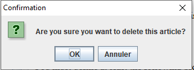

Home
Categories
Dictionary
Download
Project Details
Changes Log
What Links Here
How To
Syntax
FAQ
License
Editing in the Editor tree
Right-clicking on the tree will show in the following menu:


The "Add After" or "Add Under" option allows to add an element in the tree (respecting the structure of the file system). You can add:
When deleting an element, you will see a window prompt asking you if you really want to delete the associated file:
The deleted element will be added in the trash after deleting the element.
- The "Add After" (or "Add Under" option if you selected a directory) option will allow to add an element after (or under) the selected element
- The "Delete" option allows to delete the selected element
Adding elements
Main Article: Adding an element in the Editor tree
The "Add After" or "Add Under" option allows to add an element in the tree (respecting the structure of the file system). You can add:
- Index article. Note that this options is only availabel is no index article exists in the Wiki
- articles, including regular articles, the index article, Template articles, redirect articles, or Disambiguation articles
- Image definition files
- Resource definition files
- Infobox definition files
- Menus
Deleting elements
Main Article: Editor trash
When deleting an element, you will see a window prompt asking you if you really want to delete the associated file:

The deleted element will be added in the trash after deleting the element.
See also
- DocGenerator editor: This article explains the DocGenerator editor
- Editor tree: This article is about the left panel of the editor window, which shows the tree of the wiki
×

Categories: Editor | Gui